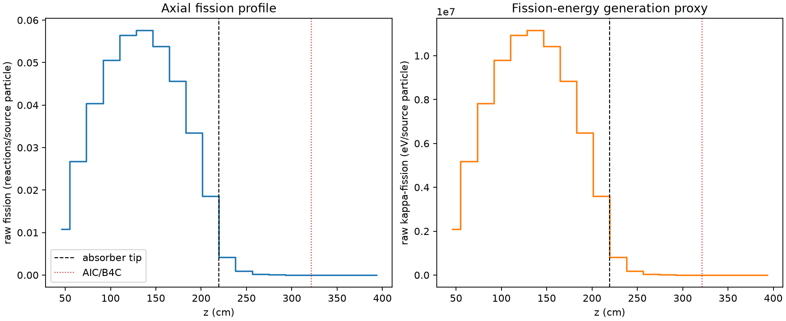
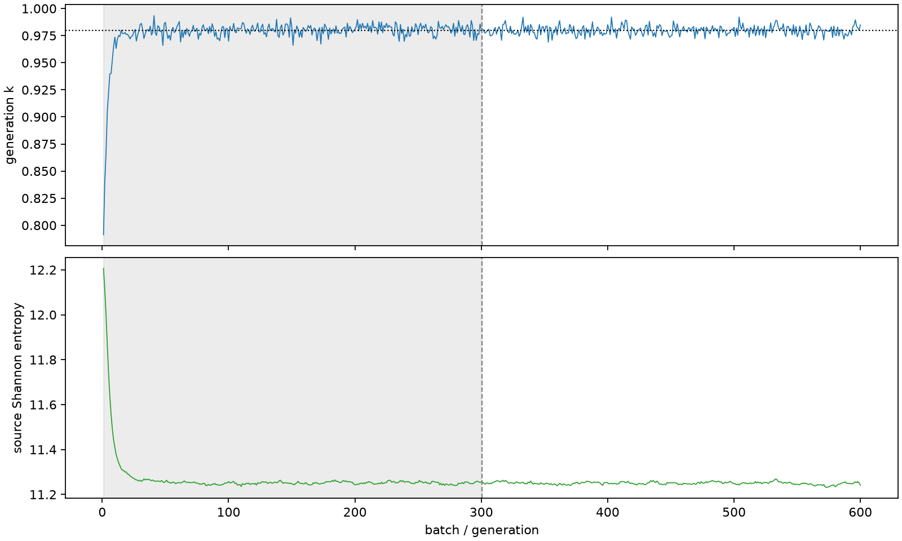

| field | value |
|---|---|
| experiment | V2-STAGE_32_OGRENCI_03-0003 |
| k | 0.9799543257421596 |
| MC standard error | 0.00017043231809081482 |
| seconds | 1031.540538586998 |
| acceptance | not_assessed |
| convergence | review_required |
Completed is output integrity only; physical and statistical review required. Zero tallies do not prove zero production or zero uncertainty.
| diagnostic | value |
|---|---|
| geometric fuel voxels | 5280 |
| zero fission tally voxels | 715 |
| low signal fuel voxels | 1650 |
| low signal fission share | 6.494139708097134e-05 |
| low signal kappa share | 6.496931629762703e-05 |
| important fission share | 0.9500258261184038 |
| previous filter included | 3630 |
| duration estimate s | 1562.5173488400023 |
| actual minus estimate s | -530.9768102530043 |
| fission relative MC error | statistics |
|---|---|
| all_geometric_fuel | {"voxels": 5280, "positive_mean_voxels": 4565, "zero_mean_voxels": 715, "undefined_relative_error_voxels": 715, "median": 0.010787497001620704, "p95": 0.7995873589933722, "maximum": 1.0000000000000002} |
| low_signal | {"voxels": 1650, "positive_mean_voxels": 935, "zero_mean_voxels": 715, "undefined_relative_error_voxels": 715, "median": 0.5741001890606464, "p95": 1.0, "maximum": 1.0000000000000002} |
| important_95pct | {"voxels": 2320, "positive_mean_voxels": 2320, "zero_mean_voxels": 0, "undefined_relative_error_voxels": 0, "median": 0.006824016673278637, "p95": 0.010414204631957148, "maximum": 0.012484590809961626} |
| outside_previous_filter | {"voxels": 1650, "positive_mean_voxels": 935, "zero_mean_voxels": 715, "undefined_relative_error_voxels": 715, "median": 0.5741001890606464, "p95": 1.0, "maximum": 1.0000000000000002} |
| kappa_fission relative MC error | statistics |
|---|---|
| all_geometric_fuel | {"voxels": 5280, "positive_mean_voxels": 4565, "zero_mean_voxels": 715, "undefined_relative_error_voxels": 715, "median": 0.010774773468165032, "p95": 0.7985055347961508, "maximum": 1.0000000000000002} |
| low_signal | {"voxels": 1650, "positive_mean_voxels": 935, "zero_mean_voxels": 715, "undefined_relative_error_voxels": 715, "median": 0.573359615257438, "p95": 1.0, "maximum": 1.0000000000000002} |
| important_95pct | {"voxels": 2320, "positive_mean_voxels": 2320, "zero_mean_voxels": 0, "undefined_relative_error_voxels": 0, "median": 0.006815264937329164, "p95": 0.010400612249234213, "maximum": 0.012467142682754867} |
| outside_previous_filter | {"voxels": 1650, "positive_mean_voxels": 935, "zero_mean_voxels": 715, "undefined_relative_error_voxels": 715, "median": 0.573359615257438, "p95": 1.0, "maximum": 1.0000000000000002} |
| axial bin | fission share | kappa-fission share |
|---|---|---|
| 1 | 0.02704299569554275 | 0.02704441364559965 |
| 2 | 0.06708903980434204 | 0.06708847810858377 |
| 3 | 0.10102067724905628 | 0.10102000798518511 |
| 4 | 0.12662454135882176 | 0.12662369122650025 |
| 5 | 0.14132540965253046 | 0.14132438405934042 |
| 6 | 0.14410662116285178 | 0.1441053846362268 |
| 7 | 0.1348066585104151 | 0.1348055536956822 |
| 8 | 0.11426644198667063 | 0.11426553495540069 |
| 9 | 0.08378970115970964 | 0.08378908098169653 |
| 10 | 0.04653873667751786 | 0.046538788984468595 |
| 11 | 0.010418206582837439 | 0.010422329424982649 |
| 12 | 0.0022899955231568186 | 0.0022910547069003597 |
| 13 | 0.0005230085799372212 | 0.0005232620999983901 |
| 14 | 0.00012377790539496114 | 0.00012383108021627134 |
| 15 | 2.5360539454618713e-05 | 2.537102527176892e-05 |
| 16 | 6.175050121847439e-06 | 6.180395034024752e-06 |
| 17 | 2.2028037002960255e-06 | 2.203576689637717e-06 |
| 18 | 4.147434456036266e-07 | 4.144494362720134e-07 |
| 19 | 3.501449295053279e-08 | 3.496278663210419e-08 |
| 20 | 0.0 | 0.0 |
Histories include the inactive-to-active transition at batch 300. kappa-fission approximates fission energy production, not total heat deposition.

